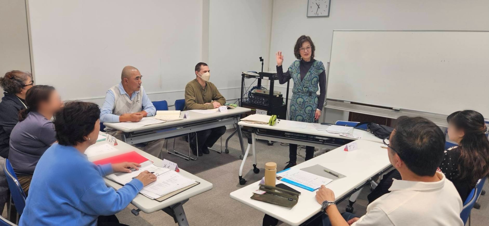
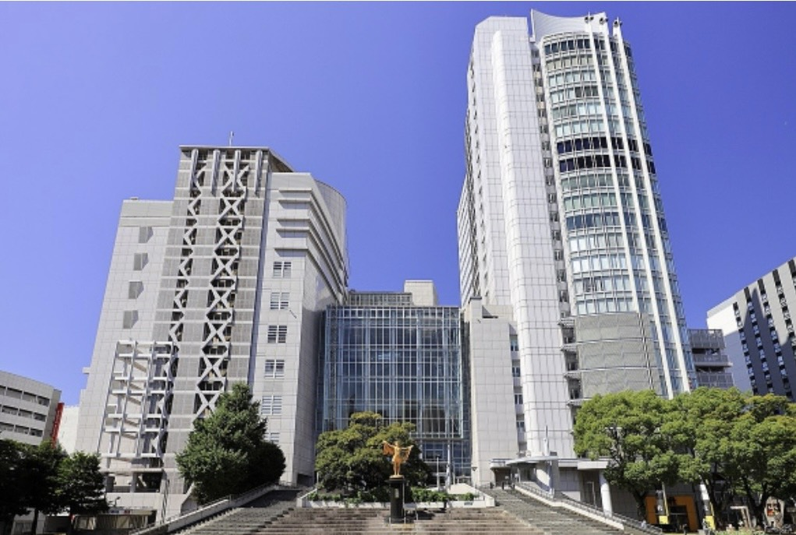
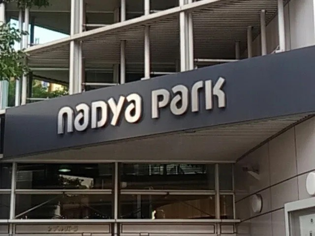

ようこそ！
「いろは日本語の会」は、日本語を学びたい方と、日本語を教えたいボランティアが集まる会です。
日常生活に役立つ日本語や日本の習慣を学びながら、安心して日本での毎日を送れるようお手伝いしています。
いろは日本語の会では、日本語を初めて学ぶ方・少し勉強したことがある方を対象に、やさしく楽しく学べるクラスを開いています。


ナディアパーク6階 名古屋市市民活動推進センター
（〒460-0008 名古屋市中区栄3丁目18-1）
名古屋市中心部・栄のナディアパーク内にあります。
地下鉄「矢場町駅」6番出口から徒歩約5分、
「栄駅」から徒歩約10分です。
毎週木曜日 10:15〜11:45 （※漢字クラス 9:50〜10:10）
1〜3月, 4〜7月, 9〜12月
レッスンや活動内容についてのご質問は、下の「お問い合わせフォーム」から送信してください。
ご入力いただいた内容は、スタッフが確認し、メールにてご連絡いたします。